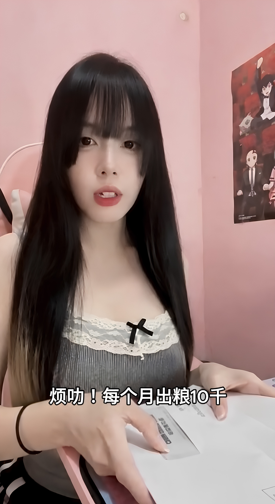
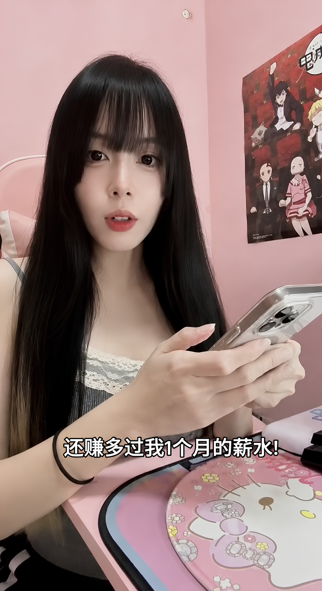

幸福的“烦恼”：当付出的努力换来满满的收获与团队成长

每一份真诚的付出都会结出硕果，而最让人感到满足的事，莫过于与一群志同道合的伙伴共同成长、分享喜悦。
作为创业小团队的负责人，小晴每月最重视的时刻就是“出粮日”。看着整理好的薪酬清单，她忍不住打趣道：“烦哟！每个人出粮10千。”虽然这句口头禅听起来像是俏皮的“抱怨”，但她的眼神里却充满了欣慰与自豪。因为这沉甸甸的数字背后，代表着团队在过去一个月里的卓越贡献与飞速突破。
1. 甜蜜的责任：真心对待每一位同行者
对于小晴来说，能够给伙伴们提供丰厚的薪酬与回报，是对他们辛勤汗水最好的认可。能够带给团队满满的安全感，本身就是一种极大的成就感：
互相成就的默契：优秀的团队从不是单向付出，你给予伙伴充分的尊重与信任，他们便会还你超乎预期的惊喜。
激发内在的潜能：合理的激励机制能让大家心无旁骛地发挥所长，让工作成为展现自我价值的舞台。
传递正向的能量：正向的循环让整个工作氛围充满了阳光与活力，每个人都在为共同的目标踏实前行。

2. 意外的惊喜：收获超越预期的丰硕回报
正当小晴满怀欢喜地为伙伴们结算完成果时，手机屏幕提示了本月整体业务的结算总结。“还赚多过我1个月的薪水！”她看着屏幕上亮眼的业绩指标，惊喜地惊呼出来。
原来，得益于团队这段时间的精诚合作与高效执行，整体项目的收益迎来了爆发式增长。这笔意外的丰厚回报，不仅远超预期，更是对大家所有努力最甜美的肯定：
“最好的事业，是带领大家一起奔向更好的生活；而最棒的惊喜，是汗水终将绽放成灿烂的花朵。”
那一刻，所有的辛苦与付出都化作了灿烂的笑容。小晴深深体会到，当一个人怀揣善意与热情去深耕事业，生活总会在不经意间赋予你意想不到的精彩。
总结
越努力，越幸运；越感恩，越充实。在这个充满希望的生活里，愿我们都能脚踏实地地奋斗，怀抱热情地生活。
勇于担当，乐于分享，带着满满的正能量，去收获属于你自己的光芒与幸福。
本文内容为生活故事与正能量分享，旨在传递积极向上的生活态度，仅供参考。